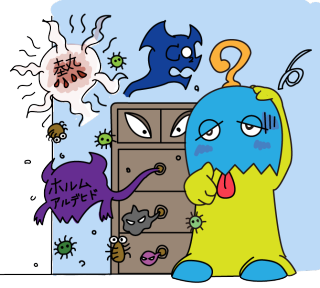
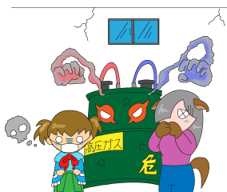
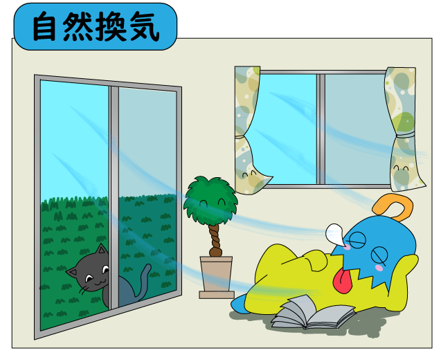
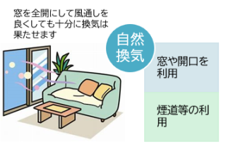
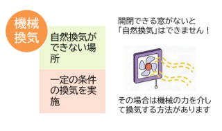

教えて換気
①換気の目的
|
|||
|  |
|||
| 換気を簡単にご説明しますと、「室内の空気を、屋外の空気と入れ替える」事です。 では、ぜ換気が必要なのかと言いますと、 人は呼吸により酸素（Ｏ2）を吸って、炭酸ガス（CO2）を排出しています。 更に室内で仕事や家事などの活動をしている時は、呼吸による炭酸ガス（CO2）濃度の上昇と、人の仕事量に応じて体内から発汗等による老廃物も空中に発散されています。 それだけではありません。空気中のほこりや細菌、ウイルスといった目に見えない物も、当然浮遊しています。 |
|||
| 「この様な室内環境では、人の健康が害されてしまいます。」 |
 |
そこで、良好な居住環境を維持する為には、、常に室内の空気を屋外の新鮮な空気を、ほぼ同じレベルに維持させる事を目的として、「換気」という作用が必要になります。 |
②換気設備の目的
| 換気作用は、窓の開閉でももちろん可能ですが、制約があり、制に沿わなければ、換気設備が必要になります。 この様に、窓がない場合は、換気扇や送風機といった機器の力や空気を移動させる経路を作ってあげないと「換気」ができません。 機器や搬送経路をひとまとめに「換気設備」と言っています。 |
||||||
換気設備の目的は、大きく分けて3種類に大別されます
|
③換気の分類
換気を大きく分けると、以下の4つに分類されます
|
||||||||
|  |
④換気の種類
| 「換気扇や送風機で換気しなくても、窓を全開にして風通しを良くするだけでもいいの？」 | |
| もちろん、換気扇や送風機といった換気設備がなくても、条件が適っていれば、窓を前回にして風通しを良くするだけでも良い訳です。 | |


換気設備としては、以下の3種類に分かれています。
| a. | 自然換気設備 風力・浮力等の自然の力を利用するものとして、吸気口や排気筒の組み合わせによって形成されるもの |
| b. | 機械換気設備 機械の力（換気扇や送風機）などの機械の力を利用したもの |
| c. | 中央管理方式の空気調和設備 空気を浄化して、その温度・湿度・風量を自動的に調整して供給し、排出ができる設備を設け、機械換気設備に空気を浄化する機能などを組み込んだもの |